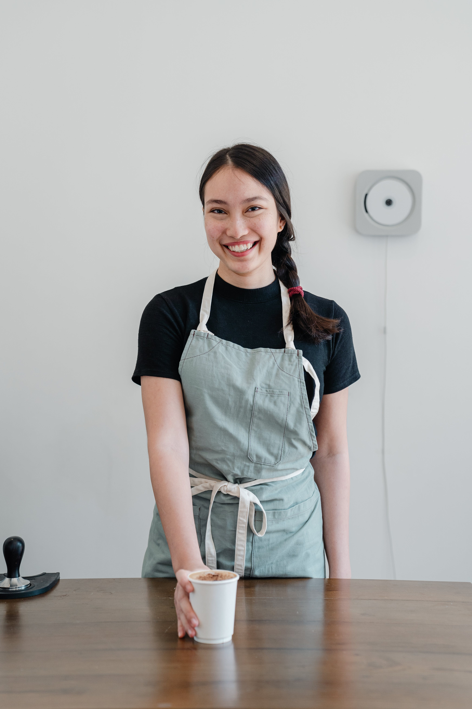
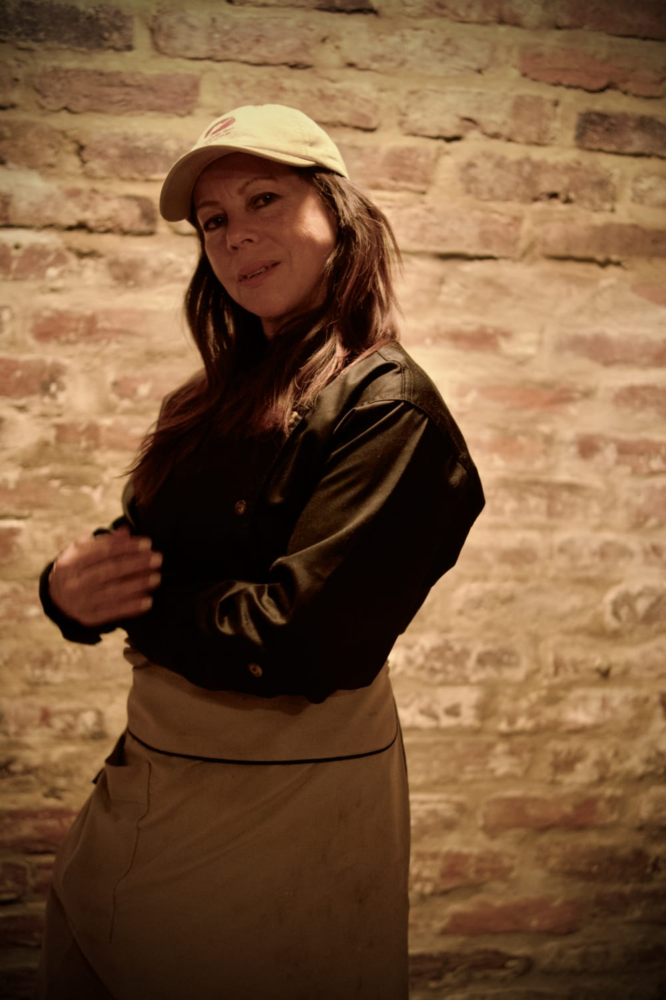

Acerca Nosotros
Café Excelsor
Ubicada en Colombia, la región de Santa María, Huila, nuestra pintoresca
finca es el corazón de nuestra operación. Aquí, bajo el sol generoso y
el clima ideal, cultivamos las variedades más finas de granos de café,
garantizando una calidad excepcional en cada lote.
Quiénes Somos
Somos una compañía dedicada a crear y posicionar el mejor café de origen
de Colombia. Contamos con un equipo altamente capacitado para llevar a
cabo dede la recolección hasta la tostión del café, garantizando así una
calidad excepcional en cada taza.
Dónde Encontrarnos
Nuestros puntos físicos en Bogotá y Panamá están estratégicamente
ubicados para que puedas realizar tus pedidos de café con comodidad.
Además, te invitamos a deleitarte con un delicioso menú inspirado en
nuestros exquisitos granos huilenses.
La Magia de Nuestra Café
En cada etapa de nuestro proceso, desde la cosecha hasta la preparación
de tu taza, nos esforzamos por ofrecerte una experiencia única y
satisfactoria. Descubre el auténtico sabor de Colombia en cada sorbo, y
únete a nosotros en este apasionante viaje por el mundo del café.
Conoce Nuestro Equipo
Nuestra Barista

Carolina - Encargada del proceso de preparaciones en nuestras sedes.
Barista en Jefe
Nuestros Cocineros

Ivonne - Encargada de la creación de menús en nuestras sedes.
Chef Ejecutiva
Nuestro Maestro Tostador

Camilo - Encargado de la tostión, maquila y trilla.
Maestro Tostador